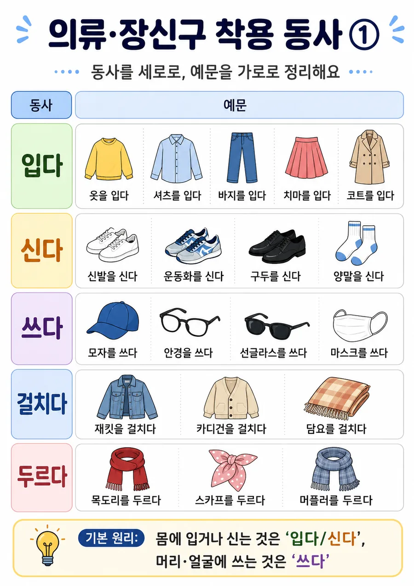

메인
|
13과
|
어휘
Chapter 13 Vocabulary Support
의류·장신구 착용 동사
자료 5장
WebP 경량본
900px
1
입다·신다·쓰다
세로 동사 / 가로 예문
2
매다·메다·들다
헷갈리기 쉬운 동사
3
자주 쓰는 표현
입다·신다·끼다·차다
4
매다·메다 기억 1
묶으면 매다 / 어깨에 메다
5
매다·메다 기억 2
그림으로 구분하기
의류·장신구 착용 동사 1
이미지 열기
